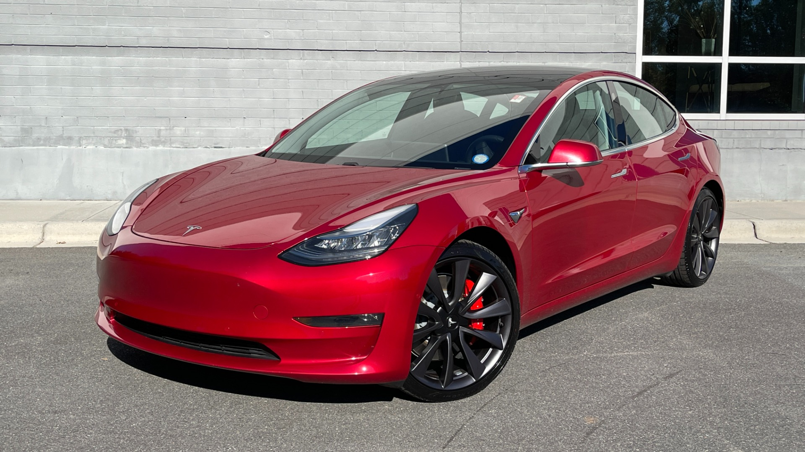
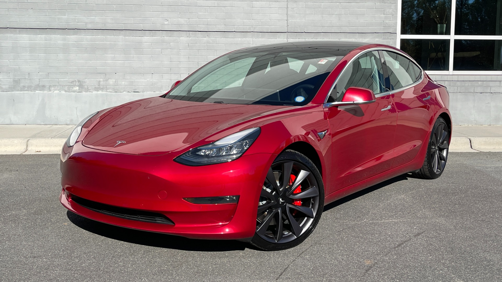

Cars are one of the most important inventions of the world. They give people freedom, convenience and speed to travel anywhere they want. Over the years, cars have evolved from basic machines into advanced vehicles filled with technology. From classic muscle cars to furutistic electic vehicles, the car industry has changed the way we live.
Some cars are built for performance and others for comfort. Electric cars like the Tesla Model 3 are shaping the future of transportation around the world. At the same time, classics like the Ford Mustang remind us of the excitement and style of earlier decades. Whether modern or classic, cars remain a symbol of freedom and innovation.
 

Learn more about cars at Car and Driver or Kelly Blue Book!
| Type | Description |
|---|---|
| Sports Car | Fast, stylish cars built for performance! |
| SUV | Larger vehicles designed for space, comfort and versatility. Great for families! |
| Electric Car | Eco-friendly cars powered by electricity. |